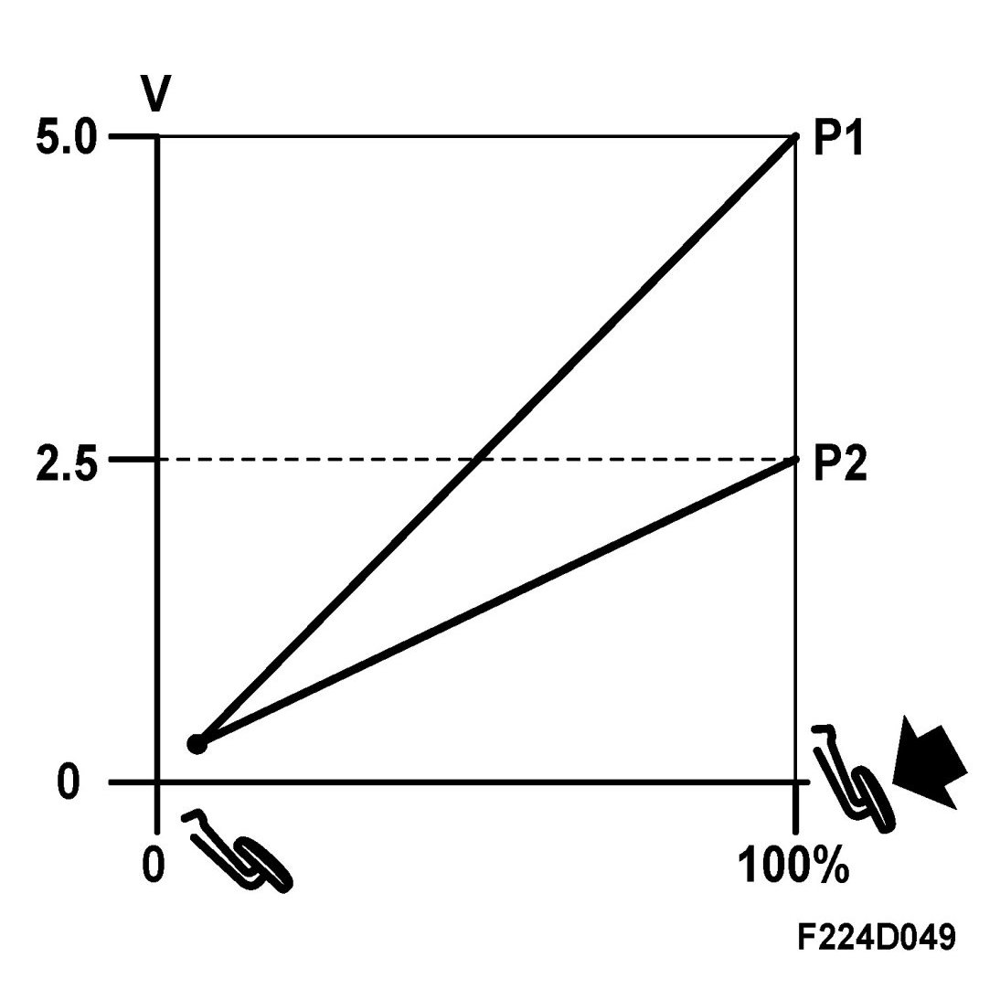
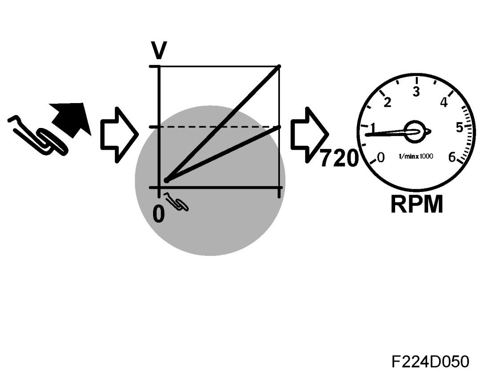
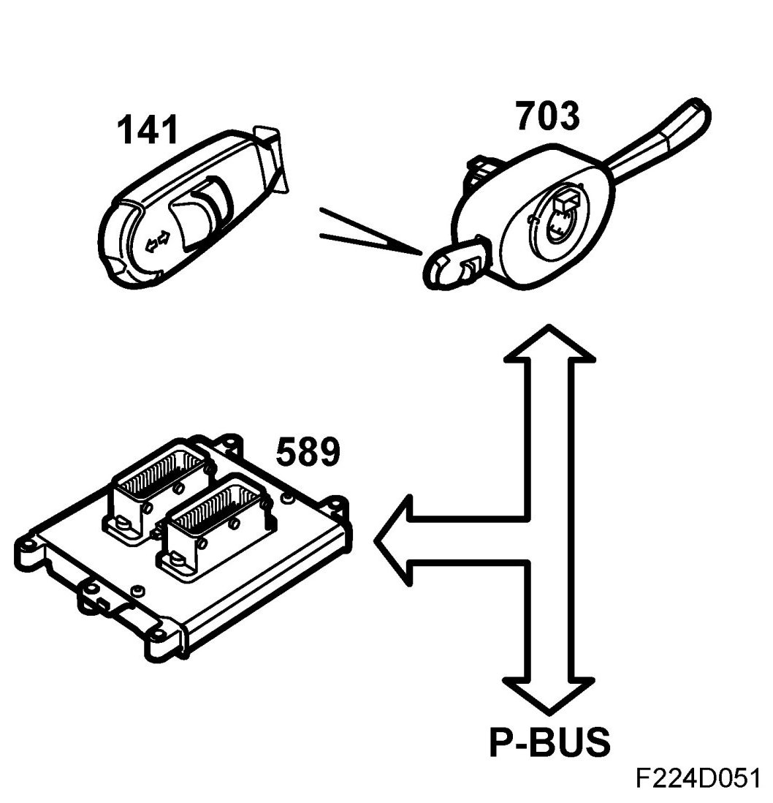
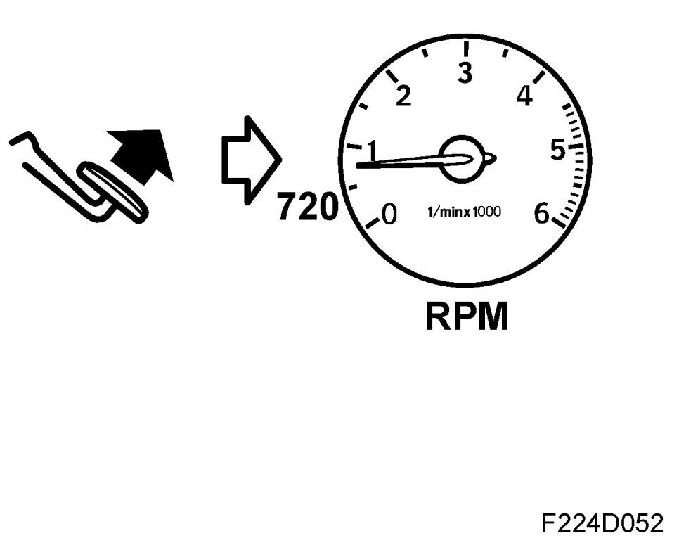
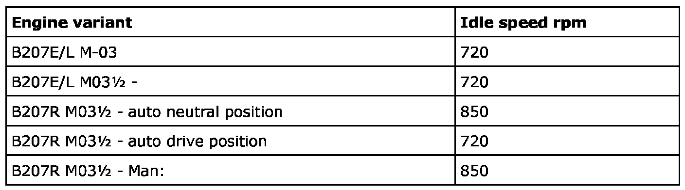
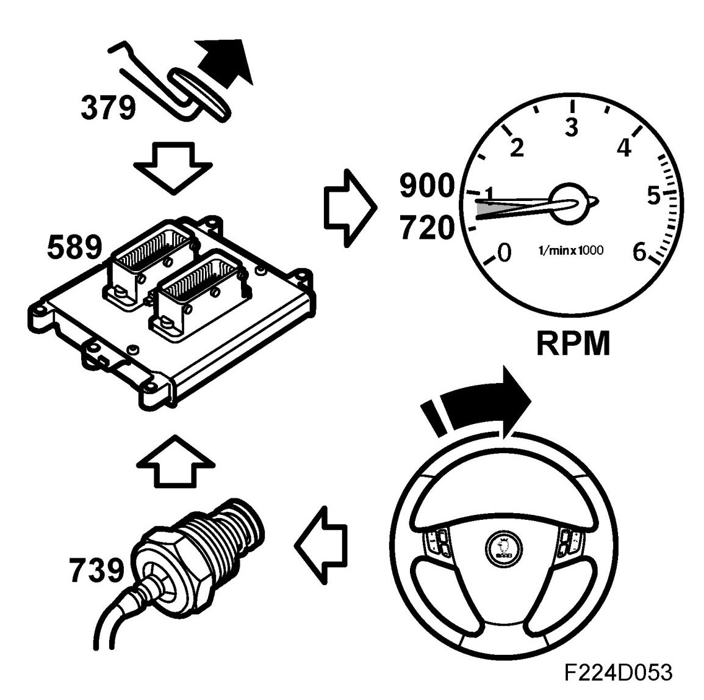

Request For Engine Torque, 1x
Request For Engine Torque, 1x
General
The following functions can request engine torque:
- Pedal matrix (10)
- Cruise control (11)
- Idle (12)
Current torque request / limitation can be read on the diagnostic tool. See read values Torque request
Pedal request
Pedal request, general
Two potentiometers are integrated in the accelerator pedal bracket. Potentiometer 1 provides ECM with information on the driver's torque request in the form of a voltage signal 0-5V.

Potentiometer 2 is a safety potentiometer that provides ECM with information on the pedal position in the form of a voltage signal 0-2.5V. This voltage is used to ensure that information from potentiometer 1 is reliable.
If the information from the potentiometers does not agree, one of them must be malfunctioning. The engine throttle control will then go into limp-home mode.
Function, pedal request
Pedal potentiometer 1 provides ECM with information on the drivers torque request. The pedal position together with the engine speed gives a requested torque using a matrix. The torque request varies between 0 Nm (idling) and a value that is somewhat greater then the maximum torque allowed for the engine.
To obtain good driveability and response to the pedal position, a given pedal position will give a higher torque at lower engine speeds and lower torque at higher engine speeds.
The torque request finally results in a requested air mass per combustion so that the engine can attain the requested torque.
Adaptation of pedal position
When the pedal is fully released, the voltage value from potentiometer 1 for the released pedal will be adapted and constitute the idling speed position for the pedal.

Limp home
Cruise control
Cruise control, general
Cruise control is operated with a switch on the direction indicator stalk. The switch is an integrated part of CIM (703), which sends the position of the switch as a bus message.

This bus message is used by ECM for the cruise control function. When the switch is put to "ON", the "CRUISE" lamp on MIU will come on. Pushing the "SET" button on the switch will store the current vehicle speed in ECM memory provided all the criteria for activating cruise control have been fulfilled.
ECM then reads from a table in which the nominal rolling resistance on a flat surface at different vehicle speeds is stored. This results in an engine torque request to maintain a constant speed.
Cruise control, vehicle speed lower than requested
If the vehicle speed is lower than the one requested by cruise control, ECM will increase the requested engine torque until the vehicle speed is the same as the requested. Maximum engine torque that can be requested by cruise control is limited to provide optimum comfort.
Cruise control, vehicle speed higher than requested
If the vehicle speed is higher than the one requested by cruise control, ECM will reduce the requested engine torque until the vehicle speed is the same as the one requested. The torque reduction is filtered to provide optimum comfort.
Cruise control, criteria for activation
The following criteria must be fulfilled before cruise control can be activated:
- Brake light switch, inactive
- Brake and clutch switches inactive
- Vehicle speed, front wheel, exceeds 25 km/h
- Vehicle speed, rear wheel, exceeds 25 km/h
- Retardation not too rapid
- Gear engaged
- Brake pedal pressed before cruise control activated
- +15 present
- No active fault codes affecting cruise control
- TCS not active
- Vehicle speed below 200 km/h
Switch positions
NOTE: For safety reasons (brake system functions), the brakes must be applied once while the engine is running before the system can be activated.
The following message is shown on SID: Tap brakes lightly before using cruise control
The system has the following functions:
- ON: Engage
- OFF: Disengage
- SET/+: Set speed and increase set speed
- SET/-: Set speed and reduce set speed
- RESUME: Resume set speed
The CRUISE indicator in the main instrument unit comes on when the slide control has been moved to ON. If the engine is turned off with the system in position ON, it will also be ON the next time the engine is started.
Setting a speed
1. Move the slide control to ON.
2. Move the control to SET/+ or SET/- when the car has attained the desired speed (above 25 km/h).
Increasing the set speed
The speed can be increased in one of the following ways:
- Accelerate to the desired. Move the control briefly to SET/+ or SET/-.
- Move the control briefly to SET/+, the speed will increase 1.6 km/h (1 mph) (when cruise control is already active).
- Hold the control in SET/+ position until the desired speed is attained (when cruise control is already activated).
Reducing the set speed
The speed can be reduced in one of the following ways:
- Brake to the desired speed. Move the control briefly to SET/+ or SET/-.
- Move the control briefly to SET/- to reduce the speed 1.6 km/h (1 mph).
- Hold the control in SET/- position until the desired speed is attained.
Temporary speed increase
Accelerate without changing down (cars with manual gearbox) such as when overtaking. The set speed will be resumed after releasing the accelerator pedal.
Disengage temporarily
Move the slide control to the left towards OFF but only far enough to disengage cruise control. The control will spring back.
Re-engaging
Move the slide control to RESUME. The car will resume the earlier set speed. Vehicle speed must be over 40 km/h for cars with petrol engine and 25 km/h for cars with diesel engine.
Disengaging
The system is disengaged:
- As soon as the brake pedal or clutch pedal is depressed (manual gearbox).
- When the slide control is moved to "Disengage temporarily"
- When the slide control is moved to OFF
- When TCS/ESP is in operation
- When gear position N is selected (automatic).
Idling
Idle speed control, general
Idle speed control is used to regulate the engine torque so that the balance between the torque developed by the engine and the torque required to keep the engine and its auxiliary equipment running is maintained.

The nominal idle speed is the number of revolutions per minute with a warm engine according to the table below. Under certain circumstances the idle speed can increase to 900 rpm. This can occur e.g. at high load of the A/C compressor, power steering pump etc.
Idle speed control is active when the accelerator pedal is released and the vehicle speed is 0.

